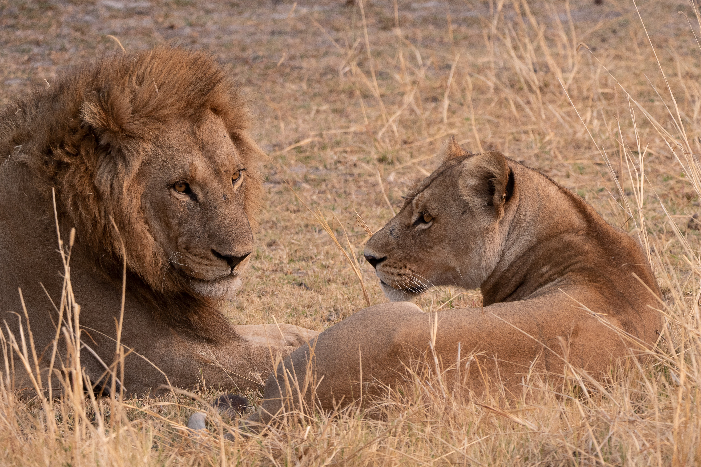
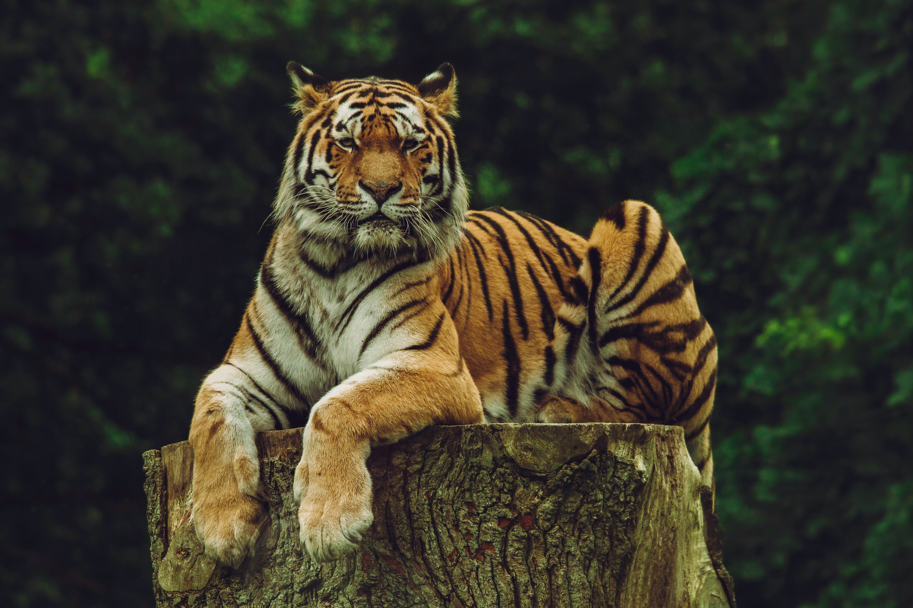
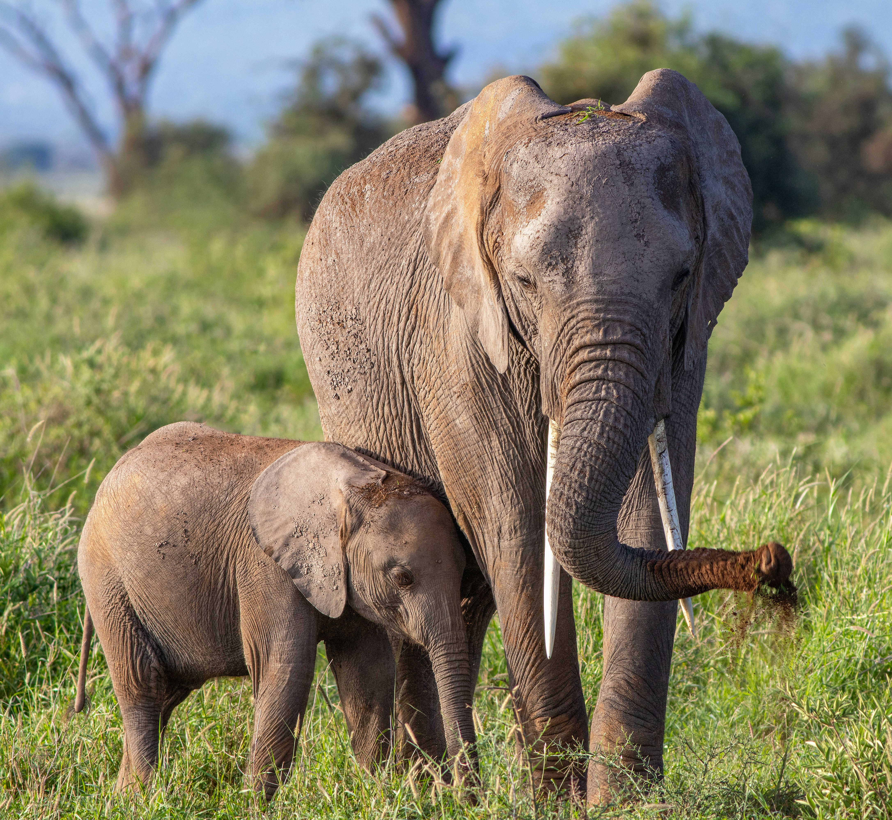
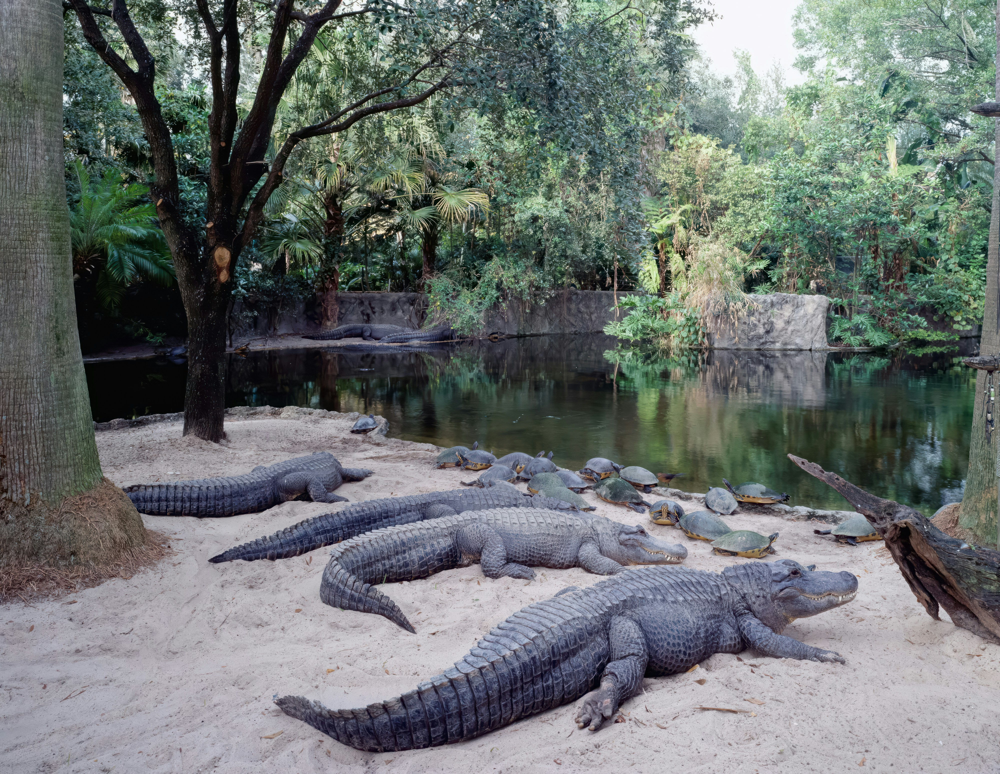
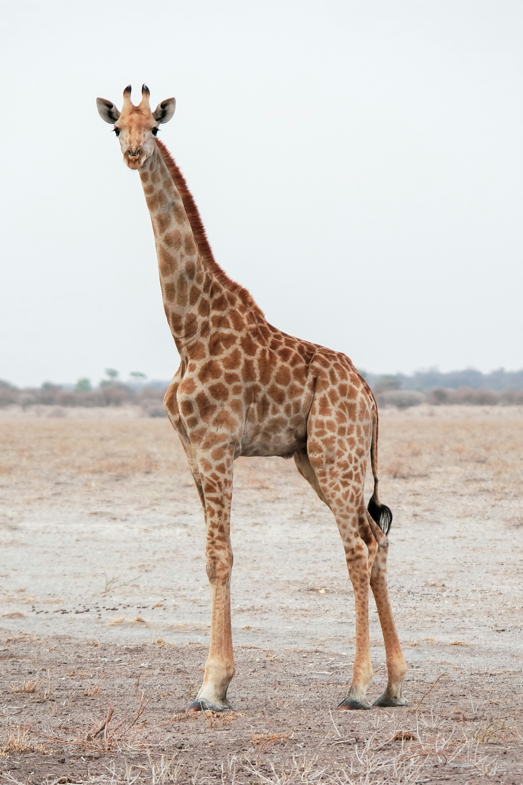
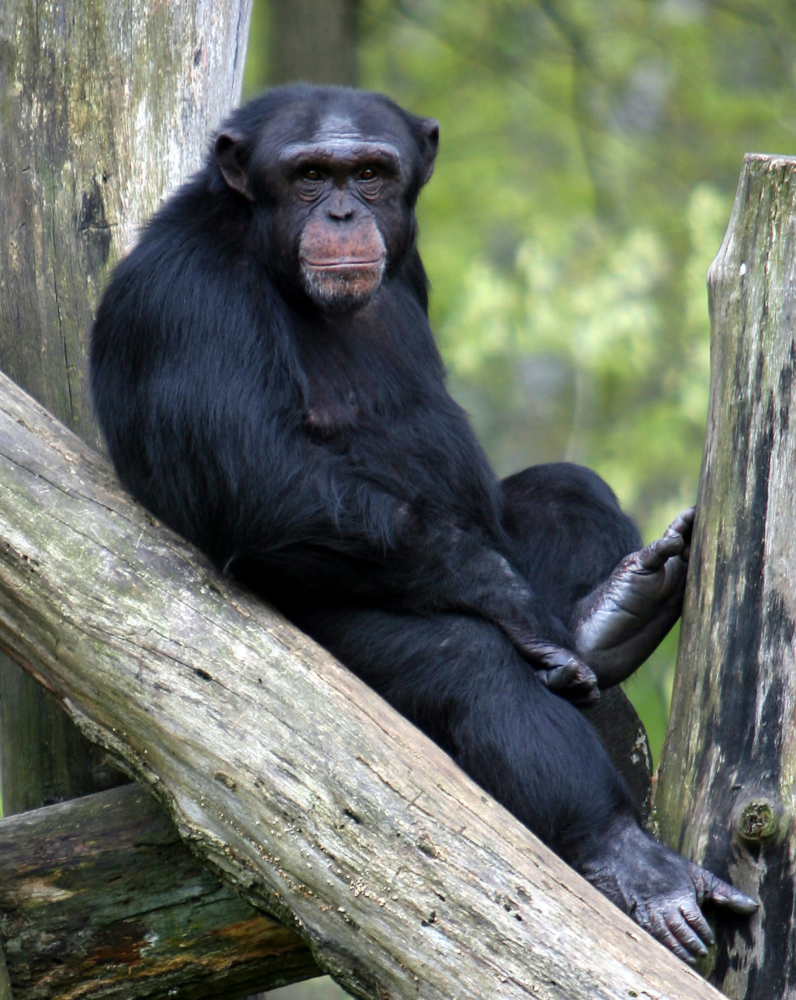

LION The lion is a well-muscled cat with a long body, large head, and short legs. Size and appearance vary considerably between the sexes. The male’s outstanding characteristic is his mane, which varies between different individuals and populations. RED FOX
The red fox (Vulpes vulpes) is the largest of the true foxes and one of the most widely distributed members of the order Carnivora, being present across the entire Northern Hemisphere including most of North America, Europe and Asia, plus parts of North Africa.
RED FOX
The red fox (Vulpes vulpes) is the largest of the true foxes and one of the most widely distributed members of the order Carnivora, being present across the entire Northern Hemisphere including most of North America, Europe and Asia, plus parts of North Africa.

TIGER The tiger (Panthera tigris) is the largest living cat species and a member of the genus Panthera. It is most recognisable for its dark vertical stripes on orange fur with a white underside. An apex predator, it primarily preys on ungulates, such as deer and wild boar.
ELEPHANT Elephants are the largest living land animals. Three living species are currently recognised: the African bush elephant (Loxodonta africana), the African forest elephant (L. cyclotis), and the Asian elephant (Elephas maximus). CHEETAH
The cheetah (Acinonyx jubatus) is a large cat and the fastest land animal. It has a tawny to creamy white or pale buff fur that is marked with evenly spaced, solid black spots.
CHEETAH
The cheetah (Acinonyx jubatus) is a large cat and the fastest land animal. It has a tawny to creamy white or pale buff fur that is marked with evenly spaced, solid black spots.

AMERICAN ALLIGATOR The American alligator (Alligator mississippiensis), sometimes referred to colloquially as a gator or common alligator, is a large crocodilian reptile native to the Southeastern United States and a small section of northeastern Mexico.
GIRAFFE The giraffe is a large African hoofed mammal belonging to the genus Giraffa. It is the tallest living terrestrial animal and the largest ruminant on Earth. Traditionally, giraffes have been thought of as one species, Giraffa camelopardalis, with nine subspecies.
CHIMPANZEE The chimpanzee (/tʃɪmpænˈzi/; Pan troglodytes), also known as simply the chimp, is a species of great ape native to the forests and savannahs of tropical Africa. It has four confirmed subspecies and a fifth proposed one. BALD EAGLE
The bald eagle (Haliaeetus leucocephalus) is a bird of prey found in North America. A sea eagle, it has two known subspecies and forms a species pair with the white-tailed eagle (Haliaeetus albicilla), which occupies the same niche as the bald eagle in the Palearctic.
BALD EAGLE
The bald eagle (Haliaeetus leucocephalus) is a bird of prey found in North America. A sea eagle, it has two known subspecies and forms a species pair with the white-tailed eagle (Haliaeetus albicilla), which occupies the same niche as the bald eagle in the Palearctic.